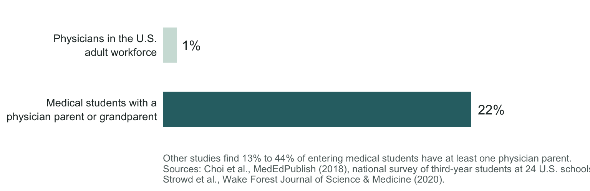

Family Expectations and the Pressure to Achieve
How parents’ degrees, and parents’ dreams, can raise the stakes for students
Family involvement can be one of a student’s greatest strengths. Parents who encourage, guide, and believe in their children give them a reason to keep going. But when expectations feel excessive, the same involvement can become pressure. Students may feel they have to reach a certain degree, or a certain title, to make their family proud or to stay at the level their family already reached.
Research points to two different paths to that pressure:
| Following in their footsteps | Reaching for what parents couldn’t | |
|---|---|---|
| Who | Students whose parents hold degrees (college, MD, JD, PhD) | First-generation students, often from families that sacrificed for their education |
| The pressure | “I have to at least match what my parents achieved.” | “I have to succeed for my whole family.” |
| What students fear | Falling below the family’s status | Letting down the people who made it possible |
| What research shows | Higher physical stress when starting college | More depressive symptoms when guilt about leaving family behind is high |
Path 1: Following in their footsteps
A Swiss-German study measured cortisol, the body’s stress hormone, stored in the hair of 71 first-semester college women. Students with at least one parent who had a university degree showed higher stress levels than students from non-academic households, even though the two groups didn’t differ in other respects. The researchers’ explanation: students from academic families may fear a drop in social status if they fail, while students without that legacy have less to lose. The authors call their findings preliminary, since the sample was small.
This pattern matters in professional fields, where many students follow a parent’s path:
Children of physicians are far more common in medical school than physicians are in the general workforce. Having a parent in the field can bring real advantages, like guidance and connections. It can also bring a quiet expectation that medicine is the “right” path.
Path 2: Reaching for what parents couldn’t
For many first-generation students, family is a central reason for pursuing a degree. Psychologist Rebecca Covarrubias and colleagues describe family achievement guilt: discomfort with one’s own college success when family members didn’t have the same opportunities. Students may feel guilty about having more freedom, learning things their family can’t share, or being away when the family is struggling.
That guilt has a cost. In one study, first-generation students reported significantly more depressive symptoms when their family achievement guilt was high, compared with students whose parents had attended college.
Support also matters in a specific way. First-generation students in one study received just as much moral support (“we’re proud of you”) from family as other students, but less academic support (help understanding how college works). Encouragement without a roadmap can leave students feeling they must succeed without knowing how.
The pressure is rising
Psychologists Thomas Curran and Andrew Hill pooled 82 studies of about 24,000 college students in the U.S., Canada, and the U.K. They found that students’ perceptions of parental expectations and parental criticism increased steadily from 1989 to 2019. Those perceptions were strongly linked to socially prescribed perfectionism: the belief that others demand perfection from you. Perfectionism, in turn, contributes to depression and anxiety.
“Parental expectations have a high cost when they’re perceived as excessive.” — Thomas Curran
How the system works
How to read this: a + means the two move in the same direction, and a − means they move in opposite directions. The map shows two loops:
- The bar keeps rising: each achievement can raise the family’s expectations for the next one. A bachelor’s degree leads to “now medical school,” and the finish line keeps moving.
- Struggling in silence: stress raises the fear of disappointing family. That fear makes asking for help feel like admitting failure, so stress keeps building.
The leverage point is the link between expectations and pressure. Open conversations with family about what success really means, and practical academic support (mentors, first-generation programs, advisors), can keep high hopes from turning into harmful pressure.
What this means for students
- Your family’s pride is not the same as their expectations. Many parents want their children to be happy and healthy first. Saying out loud what you’re feeling can change the conversation.
- Find the roadmap, not just the encouragement. Advisors, mentors, and first-generation student programs can fill in what family may not know about college or professional school.
- Getting help is part of succeeding. See the Student Stress and Support Guide for signs to watch for and where to go.
Sources
| Topic | Source |
|---|---|
| Academic households and hair cortisol | Bertrams & Minkley, Frontiers in Psychiatry (2020); Ruhr-University Bochum summary |
| Medical students with physician relatives | Choi et al., MedEdPublish (2018); Strowd et al., Wake Forest (2020) |
| Family achievement guilt | Covarrubias & Fryberg (2014); Covarrubias, Romero & Trivelli, Journal of Child and Family Studies (2015); Covarrubias et al. (2021) |
| Moral vs. academic support | Covarrubias lab research |
| Rising parental expectations | Curran & Hill, Psychological Bulletin (2022); LSE summary |